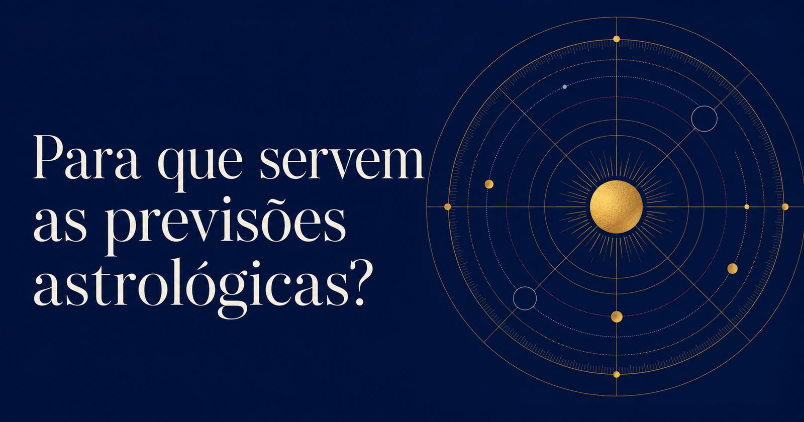

Para que servem as previsões astrológicas?
 Elaine Imenes · 4 min de leitura
Elaine Imenes · 4 min de leitura

Uma previsão astrológica reúne diferentes formas de observar o tempo. O mapa natal fornece a base, e as técnicas preditivas mostram quando e como seus temas serão ativados. O trabalho do astrólogo está em selecionar o que precisa ser examinado e relacionar as informações encontradas.
Pensei nisso ontem, quando completei 54 anos. A proximidade do aniversário costuma trazer a Revolução Solar para o centro da conversa. Ela tem sua importância, claro, mas uma previsão anual envolve muito mais.
O mapa natal mostra como os planetas estão organizados naquela vida. Um trânsito de Saturno, por exemplo, pode trazer mais responsabilidades, limites ou cobranças. A área em que isso acontecerá e a maneira como será vivido dependem do ponto do mapa que Saturno estiver ativando. Com Júpiter, podemos encontrar expansão, novos projetos e oportunidades, mas também exageros.
Outras técnicas acompanham movimentos mais lentos. As progressões mostram mudanças que amadurecem ao longo do tempo, enquanto as direções, entre elas os arcos solares, ajudam a localizar períodos importantes. A cada aniversário, as profecções colocam uma casa e um planeta em destaque. Há ainda as lunações, os eclipses e os retornos planetários, como o retorno de Saturno, que reorganiza compromissos, responsabilidades e limites.
Na prática, cada consulta pede um conjunto específico de técnicas. Algumas são mais adequadas para uma pergunta pontual, enquanto outras oferecem uma visão mais ampla. A repetição dá força à previsão. Quando métodos diferentes apontam para a mesma área, sabemos que ali existe algo importante a ser observado.
A Revolução Solar faz parte desse conjunto. Ela é calculada para o instante exato em que o Sol retorna à posição que ocupava quando nascemos. Isso pode acontecer um dia antes, no próprio aniversário ou um dia depois. A cada ano, o retorno ocorre em um horário próprio, independentemente da meia-noite ou do horário de nascimento.
A consulta pode ser feita antes ou depois do aniversário. Feita com antecedência, oferece uma visão do ano que começará. Semanas ou meses mais tarde, continua ajudando a compreender o período em andamento. A Revolução Solar permanece válida até o retorno seguinte.
A leitura ganha precisão quando é relacionada ao mapa natal e às demais técnicas. Se a vida profissional aparece com força na Revolução Solar e o mesmo assunto surge nos trânsitos, nas direções ou na profecção anual, essa repetição mostra que o tema terá um peso maior. A consistência vem da capacidade de reconhecer quais informações se confirmam e se complementam.
E para que queremos saber tudo isso?
As previsões ajudam a antecipar períodos de crescimento, pressão, mudança, decisão ou encerramento. Mesmo sabendo o que se aproxima, continuamos expostos ao impacto da experiência. Podemos reconhecer o fim de uma relação, de um trabalho ou de uma fase e, ainda assim, sofrer quando ele chega. O conhecimento oferece contexto e pode mudar nossa maneira de viver aquele momento.
A previsão também ajuda a aceitar o inevitável. Aceitar significa reconhecer que cada situação e cada pessoa têm seu tempo por aqui, permitindo que as emoções façam parte do processo. Algumas pessoas permanecem conosco durante muitos anos, enquanto outras passam mais rapidamente. Certas histórias acabam, ainda que achemos que ainda não estamos preparados para o fim.
Nossa margem de escolha costuma ser menor do que gostamos de imaginar. Às vezes, podemos escolher fazer ou não fazer. Em outras situações, só podemos decidir como responder: fazer com alegria ou com raiva, compreender o momento ou gastar energia brigando com algo que já está acontecendo.
Uma leitura pode mudar a forma como recebemos um acontecimento e até a intensidade de seu impacto, mesmo quando aquilo que estava previsto se realiza. O preparo construído até ali faz diferença. Se sei que uma fase mais exigente se aproxima, posso deixar a agenda menos cheia, evitar novas obrigações ou admitir que precisarei de ajuda.
Eu confiro os aspectos e o meu mapa no início de cada semana. Uso essas informações para organizar meus compromissos, observar os dias que podem exigir mais de mim e escolher onde vou concentrar minha energia, minha atenção e minha paciência. O mapa orienta meu olhar e me ajuda a escolher minha posição diante do que chega.
Ontem completei 54 anos e olhei para as configurações do meu novo ano. Quero compreender para onde devo canalizar minhas energias, minha atenção e minha paciência, mas fazer aniversário também é celebrar o fato de continuar aqui. Tenho pessoas que amo por perto, projetos que ainda quero realizar e muitas coisas para aprender e ensinar. Também carrego ausências, mudanças e histórias que terminaram. Cheguei aos 54 com tudo isso.